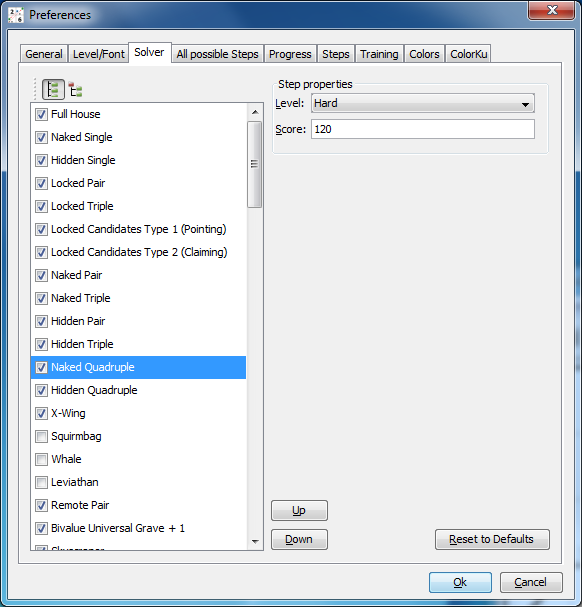
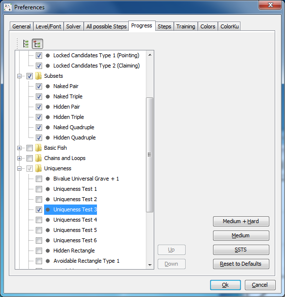
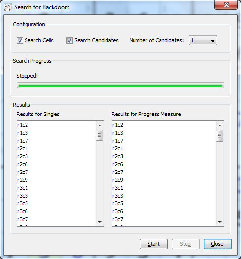
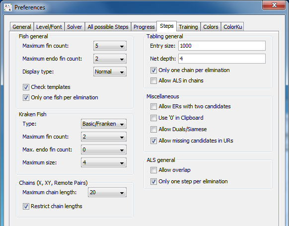

Chapter 3: Configuring the Solver
Table of Contents
- Solver strategy
- Enabling/Disabling techniques
- Changing order of techniques
- Duplicities and examples
- Progress measurement
- Backdoor searcher
- Options for solver steps
Solver strategy
HoDoKu uses the same solver strategy as most other computer solvers. All available techniques are ordered. The solver tries one technique after the other until it finds a possible step. That step is applied to the sudoku and the search starts again with the first technique.
The order of the techniques is based on their difficulty (easier steps before more difficult ones). "Difficulty" very often is of course a matter of taste, which is why you can change the order of techniques to your liking (see below).
This strategy means that the solver never uses a complicated step if an easy one is possible. It also means that the solver very seldom finds the shortest possible solution, it finds the one with the easiest steps regardless of their number.
The standard solver order can be seen under "Edit|Preferences|Solver" after pressing "Reset to Defaults". As of version 2.0 the dialog lists 91 different steps, some of which belong to the same family (e.g. 42 different kinds of fish). Other steps take only one entry in the list but can produce slightly different techniques (e.g. "Nice Loops/AIC" can result in "Discontinuous Nice Loops", "Continuous Nice Loops", and "AICs").
Enabling/Disabling techniques
Steps can be enabled or disabled. A disabled step is not searched for by the solver.
Some techniques take a long time to compute and are therefore disabled by default (e.g. all the larger or more complicated fish types). Enabling them can have a serious impact on the time the solver needs to process a sudoku.
If you don't like specific steps you can disable them as well. Enabling or disabling techniques is a two step process: First click on the technique to highlight it. HoDoKu fills the "Step properties" panel with the step's attributes. If the step is highlighted clicking the step toggles the check box.
All changes made in the dialog are automatically saved at program exit. Alternatively they can be stored in a configuration file (see Saving/Loading configurations and sudokus).
Pressing the tree button above the step list switches the list into category display mode. Steps are shown in a tree organized by solution categories. This makes it easy to disable a whole group of techniques with one click (e.g. all Chains, or all Mutant Fish). Step reordering (see below) is not possible while in tree mode.
Changing order of techniques
To change the order, in which the techniques are processed by the solver, click a step to highlight it and use the "Up" and "Down" buttons to change the technique's location in the list or use drag and drop.
Please note that changing the order of techniques can result in completely different solutions for one and the same sudoku and can lead to a different rating (see Rating and difficulty levels).
The order of techniques not only affects the solver but the hint system as well. If you prefer certain techniques, put them further up in the list. If you don't like techniques at all, disable them. If you want them only as a last resort, put them further down the list.
Duplicities and examples
Many techniques exist under different names. A Skyscraper for example is also a Turbot Fish and an X-Chain. It can also be seen as a combination of two Sashimi X-Wings. 2-String-Kites and Empty Rectangles can also be Turbot Fishes or Finned Mutant X-Wings.
Step ordering and enabling/disabling can therefore be used to list certain steps only under a specific name. Take for example the following steps in their default search order:
- 2-String-Kite
- Skyscraper
- Turbot Fish
- Empty Rectangle
Empty Rectangles are only shown if the box with the ER holds at least three candidates. Finding Empty Rectangles with two candidates can be enabled via an option, but since Turbot Fish comes before Empty Rectangle these steps will always be listed as Turbot Fish and the option seamingly has no effect at all. If you really want to see 2 candidate Empty Rectangles listed as Empty Rectangles, you have to either disable Turbot Fish or move Empty Rectangle before Turbot Fish. Likewise if you move Turbot Fish before 2-String-Kite or Skyscraper you will never see any of those anymore (they will be caught by the Turbot Fish code).
Progress measurement
Terms and definitions
Steps can be classified by how far they advance a sudoku. This is called the "progress measure" of a step. To compute the progress measure the sudoku is solved using a configurable set of techniques, the "progress steps". The screenshot shows the configuration panel for progress steps in category view. Steps can only be chosen if their difficulty level is at most "Hard". If you absolutely have to include an step that is "Unfair" or greater you have to change its difficulty level first.
If the list view is chosen, a step order can be defined for progress steps as well. This step order is completely independent from the normal solver step order.
To make configuring the progress steps easier various default configurations are available:
- Default: Singles, Intersections and Subsets
- Medium + Hard: All steps classified as "Medium" or "Hard"
- Medium: All steps classified as "Medium"
- SSTS (Simple Sudoku Technique Set): Full House, Naked Single, Hidden Single, Locked Pair, Naked Pair, Locked Candidates, Locked Triple, Naked Triple, Naked Quadruple, Hidden Pair, X-Wing, Swordfish, Simple Colors, Multi Colors, Hidden Triple, XY-Wing, Hidden Quadruple (in the order given above). This technique set is often used by forum members to advance a sudoku to a more "interesting" state
The progress measure for a step consists of three independent scores:
- Number of direct singles: Number of singles that are available immediately after the step is applied
- Number of singles: The total number of singles available after the step is applied and using the complete progress step set
- Score: The score of all progress steps after the step is applied. If the sudoku cannot be solved, the score of the "Give Up" step is not added.
Solve up to
The progress definitions are also used by the "Solve up to" button in the hint area. If that button is pressed, the normal solver strategy is applied. If the next step found is defined as a progress step, it is executed and the search is repeated. The automatic solving stops at the first non progress step.
Backdoor searcher
Most sudokus, even very hard ones, have one or more backdoors: A backdoor is a cell or a combination of cells, that when set, reduces the sudoku to Singles only. Most sudokus have backdoors consisting of one cell only. Extremly hard ones need a pair of cells to become easy. The famous Easter Monster (posted by JPF one the Sudoku Player's Forum in April 2007) even needs three specific cells set before it yields to Singles.
HoDoKu can calculate various types of backdoors: Backdoors for cells only (using Singles as well as progress steps as measure) and backdoors for candidates or combinations of candidates.
When searching for backdoors in cells single cells are tried (for Singles and for progress steps). If no backdoors could be found the search continues for pairs of cells and if necessary for cell triples. Please note that these computations can take a long time to be completed.
When searching for candidate backdoors the maximum search depth can be chosen with a combo box ("Number of candidates"). As with cells the search stops as soon as backdoors have been found. Since a sudoku has a lot more candidates than cells a search depth of 3 means that HoDoKu has to try an enormous amount of candidate combinations which of course needs a long time to complete.
Options for solver steps
Every solver step has a level and a score besides his order in the solver hierarchie. These attributes are discussed in detail in Chapter 4: Rating and difficulty levels. The behaviour of some of the other techniques can be changed with the options available in "Edit|Preferences|Steps":
Fish general (options affect all types of fishes except Kraken Fish):
- Maximum fin count: Maximum number of fins allowed in searching for fishes. Although a grater number of fins is theoretically possible it is highly unlikely that a fish with so many fins can yield an elimination (in a finned fish an eliminated candidate has to see all the fins). Increasing this number has a huge negative impact on performance.
- Maximum endo fin count: Maximum number of endo fins allowed in searching for fishes. Especially when searching for large Mutant Fishes a large number of endo fins slows down the search significantly and is unlikely to produce better results.
- Display type: "Normal" displays fishes as in versions prior to v2.0. "Numbers" and "Cells" gives additional information about the architecture of the fish.
- Check templates: Templates are a possible way to test whether a single digit pattern (such as fish) can give an elimination. When this box is checked a fish search for a candidate is only done when the template check shows possible eliminations. Please note: While a negative template check ensures that none of the fish types implemented in HoDoKu can give a result, the opposite is not true.
- Only one fish per elimination: For every possible combination of eliminations only the smallest available fish is displayed.
Kraken Fish:
- Type: The possible types for the fish within the Kraken (only Basic, Basic and Franken or all fish).
- Maximum fin count: Maximum number of fins for the Kraken Fish.
- Max. endo fin count: Maximum number of endo fins for the Kraken Fish.
- Maximum size: Maximum number of base/cover sets for the Kraken Fish.
Chains (options affect X-Chains, XY-Chains and Remote Pairs):
- Maximum chain length: Maximum number of links in chains (please note: an XY-Chain with 5 cells contains 9 links).
- Restrict chain lengths: If set, "Maximum chain length" is applied to the chain searcher (only chain types mentioned above).
Tabling general (options affect Nice Loops, AICs, Forcing Chains/Nets and Kraken Fish):
- Entry size: Maximum number of implications for each premise. Setting a low number will reduce the number of chains found by the tabling solver. Setting a larger number will increase HoDoKu's memory requirements and slow down execution of the solver.
- Net depth: Maximum number of look aheads in a Forcing Net search. Increasing this number will produce more complicated nets and increase the computation time (but not necessarily lead to more different eliminations).
- Only one chain per elimination: If checked, chains leading to eliminations for which a chain already exists will only be recorded if the new chain is shorter than the old one.
- Allow ALS in chains: Including ALS as nodes in chains increases the number of possible chains and therefore the search time. The option is disabled by default.
Miscellaneous:
- Allow ERs with two candidates: If not checked, steps will only be considered valid ERs if more than two candidates are set in the block containing the ER (ERs with only two candidates will be found as Turbot Fish and/or as X-Chain).
- Use '0' in Clipboard: Uses '0' instead of '.' when exporting sudokus to the clipboard.
- Allow Duals/Siamese: If checked, Dual Empty Rectangles and Dual 2-String-Kites are found. When searching for fish Siamese Fish are identified. Checking this option does not increase the strength of the solver: All dual/siamese steps are found as two seperate steps anyway.
- Allow missing candidates in URs: If set, the UR itself does not have to be complete (not all candidates forming the UR have to be present, see Unique Rectangles with missing candidates).
ALS general:
- Allow overlap: Since release 1.2 overlaps between non adjacent ALS in ALS chains are generally permitted. Overlaps between adjacent ALS have to be enabled using this option. Enabling overlaps generally increases the search time drastically without really enhancing the solver's capabilities, but it allows for very interesting variations of steps.
- Only one step per elimination: If checked only one step is displayed for every possible combination of eliminations.
Copyright © 2008-12 by Bernhard Hobiger
Last modified on May 5, 2025 by shorty#3746
(based of the 1to9only Github repo)
All material on this page is licensed under the GNU FDLv1.3.